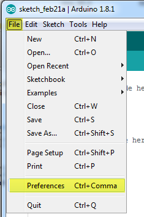
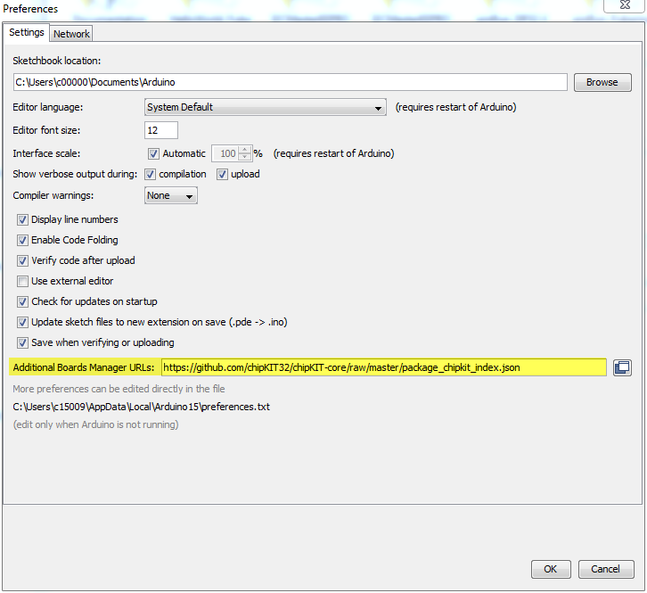

| chipKIT Sketch Help |
|
|
To create a sketch that will run on chipKIT boards, you need to add the chipKIT Core repository for the Arduino IDE. Select File>Preferences (see Figure: Edit Preferences in Arduino IDE) from the Arduino IDE to open the Preferences dialog.Figure: Edit Preferences in Arduino IDEIn the Preferences dialog (Figure: Arduino Preferences Dialog), type to the following URL in the "Additional Boards Manager URLs" field:https://github.com/chipKIT32/chipKIT-core/raw/master/
package_chipkit_index.jsonFigure: Arduino Preferences Dialog
|
|
|
Microchip Support
Help Updated: 2017-04-13 14:25:13Z
Help Page: 5
|